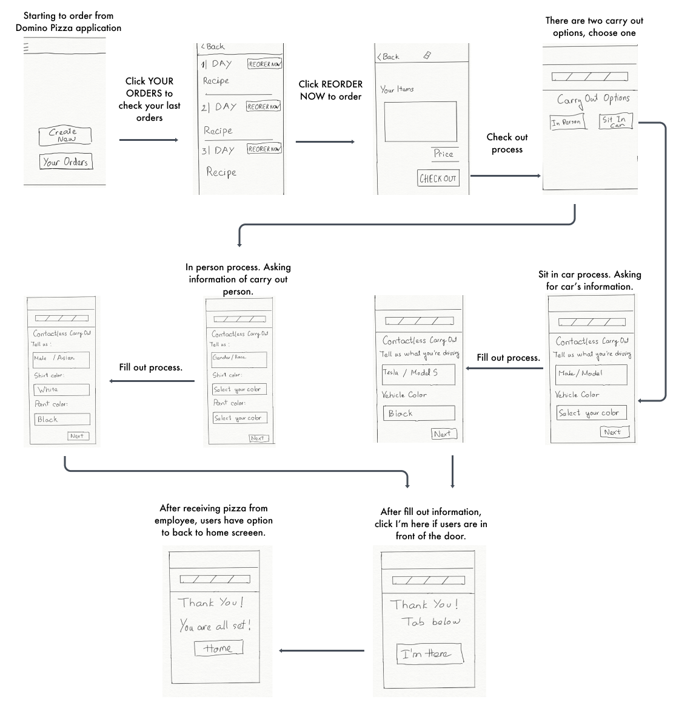
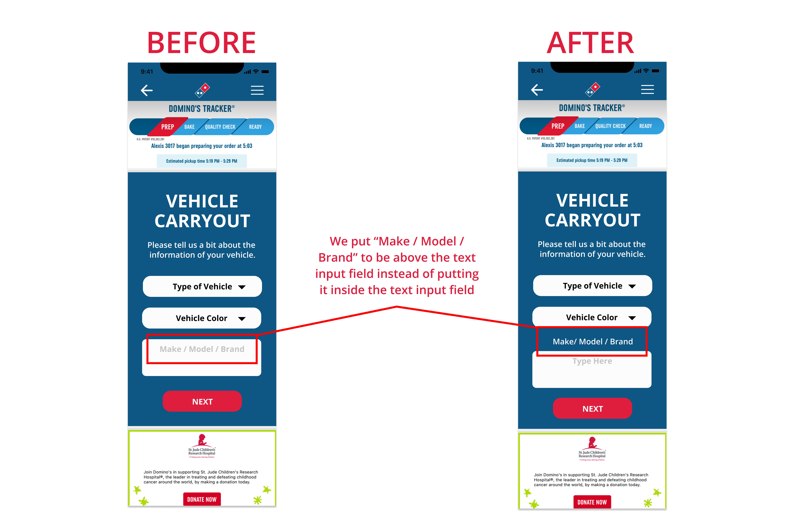

Team: An Huynh (me); Tam Tran
My role: UX Research and Designer, Prototype
Context: Domino's Pizza Mira Mesa, San Diego
Methods: Research, User Interview, User Testing
How can we improve the quality of service for customers who ordered CARRYOUT using Domino's Applications under the pandemic?
Background: Under the pandemic, customers prefer to order domino pizza online using the Domino's application. At the store, only one person is allowed to go inside and the other must get in line outside the store. However, carryout customers have to wait too long in the line just pick up the pizzas which they have already ordered because in-app ordered customers are mixed with in-store ordered customers. Therefore, we plan to redesign domino's application because we believe that reducing the wait time and contact should be a highest priority for carryout customers.
Our main research goal is to have a better understanding of users’ perspectives, especially everyone has different points of view. As designers, we know that if we do not have proper user research, we might have our design plan with biased perspective, that has happened a lot in many designs around the world. We chose interviews as a research method. The reason we chose this particular method was because we would like to talk in depth with users, and have open ended questions. Therefore, we would have more qualitative information, and there would be more to analyze. Also, our users would like to talk with us by calling through phones, or using Zoom. For our plan, we are going to interview about 5 to 7 people for our project. Additionally, the participants are relevant to our project because they often eat pizza, and would like to use an app to save their time, and be safer during the pandemic.
1) Most people we interviewed including domino’s employee said that
customers have to wait longer than their ideal time in the pandemic.
2) Some people we interviewed felt not fair because they were placed in
the order line even though they came to carry out their order.
3) The employee also complained that they sometimes don’t have enough
space for cooked-pizzas (keep warm before pick-up) because of stacked
orders.
4) Most participants are okay with waiting line but they prefer to reduce
contact with employees and other customers as much as possible in order to
be safer.
5) Additionally, a few participants mention that it would be great to
reduce the time wearing a mask, since they are not comfortable with
wearing it. Therefore, they prefer the better options for carry out their
food if it reduce wearing mask time unless mask is necessary. Also, they
do not have to stand outside, especially if there are many other people
also waiting for their food.
How might we help customers spend less time on waiting to save their time?
How might we help customers reduce time of wearing masks?
How might we help customers reduce contact with other people under the
pandemic?
How might we help employees have an easier time noticing when customers
come to pick up?
How might we help employees reduce losing their customers because they
have to wait for their pizza for a long time?
How might we help employees not feel frustrated because there are too many
customers come at the same time?
Flow 1: User Flow 1 is designed for both Adam and Helen personas because it offers a new feature which helps customers to save more time and employees to identify customers easier. Instead of directly asking customer’s or vehicle’s information, this flow allows employees to have enough information to know who is in front of the door and what their order is. For users, this flow reduces contact with other people under the pandemic which is very important for user’s health.
Flow 2: Similar to User Flow 1, User Flow 2 is designed for both personas mentioned above, and the flow reduces contact with other people under the pandemic which is very important for user’s health, by having enough information before giving the food instead of directly asking customers. Nevertheless, there are a few differences in the process. Instead of showing codes in User Flow 1, users can enter their information about themselves, including their appearance for picking up in person. While the process for “In Car” has the same UX flow, it is actually a little bit different about details in Sketches section.

Prototype 1: For this prototype, it has two options to pick up, which are “In Person” and “Contactless” (or “In Car”). For “In Person”, it has a number on the app that helps employees recognize which food they should give to the particular customer. When customers arrive, they can show their numbers in front of the restaurant to let employees know. For “Contactless”, it has one dropdown option to choose for the type of vehicle (motorcycle, sedan, suv, truck, etc.), and one input field for license plate number. With that information of the vehicle, it helps employees have an easier time to recognize which vehicle customers are in, in order to quickly give the food to them.

Prototype 2: Similarly, Prototype 2 also has the same two options to pick up. However, there are a few differences in details of what information customers can provide to help employees. For “In Person”, it asks for the description of customers’ appearance, including “Gender/race”, “Shirt Color”, and “Pant Color”. Thus, employees can recognize different customers more easily with different details about each customer. For “In Car”, it asks for the “Make/Model”, and “Vehicle Color”. Similar to Prototype 1, “In Car” option helps employees have an easier time to recognize which vehicle customers are in, in order to quickly give the food to them.
What users liked most about Prototype 1 was it was more simple in “In Person” option, since it only showed the number to confirm with the employees. While, what they liked most about Prototype 2 was they did not have to type license plate numbers, which many people did not remember them, and had to go out of the vehicle and check for the numbers.
For Prototype 1, the only confusion was the confirmation number of the “In Person” option, since it was not descriptive enough in order to guide customers what to do with it. While, there was no struggling or confusion when they used Prototype 2.
Overall, they preferred to use Prototype 1, since it was more simple to use, and had less details to fill out.
For the “In Person” option, they preferred Prototype 1, because they did not like to fill out details about their appearance. Additionally, they mentioned that asking about “Gender/race” might be sensitive to many people, which may lead to uncomfortable situations.
For the “In Car” option, they did not prefer either prototype. Nevertheless, one of the participants suggested having mix options from both prototypes for the “In Car” option including “Type of Vehicle”, “Make/Model”, and “Vehicle Color”.
This high-fidelity prototype actually implements the mix of both of our
original UX Flows in Milestone 3, since we got feedback from the users
that they prefer some features of the first flow, while they also prefer
some features of the second flow. Therefore, we did not have to change our
flow technically, even though it took a bit to select the features from
both flows to combine into one high fidelity prototype.
Since our low fidelity prototypes are almost the same with our original UX
flows, the process was the same, that we combined the features from both
prototypes into one prototype. We learned that this was really good to
have feedback from users, that we could learn more from different
perspectives. We also realized that sometimes there were details that we
did not recognize during our design process, and the users actually helped
us a lot in spotting the details that we need to improve for our design.
For our plans for next steps, we are going to have another testing on our
high fidelity prototype, in order to have more feedback, especially on the
visual aspects. Additionally, we are planning to reflect our process, so
we can see if there are more aspects that we can improve, and have a more
insightful case study.


After feedback, we decided to use the alternative screen for “Vehicle Carryout”. For the original screen, when users typed information in “Make / Model / Brand”, the word “Make / Model / Brand” would disappear. If users forgot what information they needed to type in, they had to delete everything and started over again. Therefore, putting the word “Make / Model / Brand” above the text input field instead of putting it inside would help users be able to avoid that situation.
Working in a group does not always create the best products. Communication does.
A good designer is the one who knows how to communicate with users and other designers. Communicating with the users will help you know the problems that they are facing while communicating with other designers will give you the solutions for those problems.
Thanks for reading!